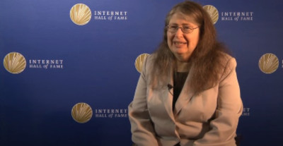
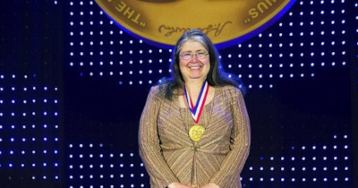

Radia Perlman
A MÃE DA INTERNET
Nascida nos EUA Radia Joy Perlman é cientista de computação, projetista de software e engenheira de redes.
Apesar de seus pais serem programadores para o governo e ser uma excelente aluna em matemática e física, Radia despertou seu interesse por computação somente no ensino médio, ao participar de uma aula de programação.

Após concluir o ensino médio, Radia iniciou a graduação em Matemática no MIT (Massachusetts Institute of Technology). Seu primeiro trabalho remunerado foi com programação de software e sistemas de computadores no Laboratório de Inteligência do próprio MIT. Foi nesta mesma época que Radia desenvolveu o sistema TORTOS, uma versão infantil de linguagem robótica voltada para a educação de crianças com idade entre 3 e 6 anos. Radia realizou seu mestrado em Matemática e seu doutourado em Ciência da Computação também no MIT.
Em 1984, Radia foi trabalhar como engenheira na Digital Equipment Corporation (DEC), onde recebeu a missão de criar um protocolo que permitisse que a internet tivesse um alcance maior, porém sem utilizar grande quantidade de memória.
Foi então que Radia criou o Spanning Tree Protocol (STP), permitindo que mais pontes fossem criadas na rede e carregassem pedaços de mensagens que se completariam ao chegar no destinatário.
Funciona da seguinte maneira: uma ponte raiz calculava qual era a rota mais curta, fazendo com que as mensagens chegassem mais rápidas e assim não permitindo que o sistema ficasse instável.
Foi graças a criação do STP que Radia Perlman recebeu o título de "mãe da internet".
Além de ter criado o STP, Perlman também trabalhou como projetista dos protocolos DECnet IV e V, que compõem a arquitetura de rede ponto a ponto; colaborou na criação do Protocolo de Roteamento de Rede Sem Conexão (CLN).
Em parceria com Yako Rekhter desenvolveu os padrões de roteamento de rede, tais como o Protocolo de Roteamento de Interconexão de Sistema Aberto (IDRP), que permite a comunicação em rede através de domínios de broadcast, responsável pela transferência de conteúdos via internet de modo simultâneo para mais de um receptor.
Por fim, Perlman também atuou no melhoramento dos protocolos de roteamento do sistema intermediário para o intermediário, conhecido como IS-IS, que serve para rotear o protocolo IP (Internet Protocol).
Hoje, aos 72 anos, Radia Perlman trabalha na Dell EMC.
PRINCIPAIS PREMIAÇÕES
National Inventors Hall of Fame
2016
Internet Hall of Fame
2014
SIGCOMM Award
2010
USENIX Lifetime Achievement Award
2006